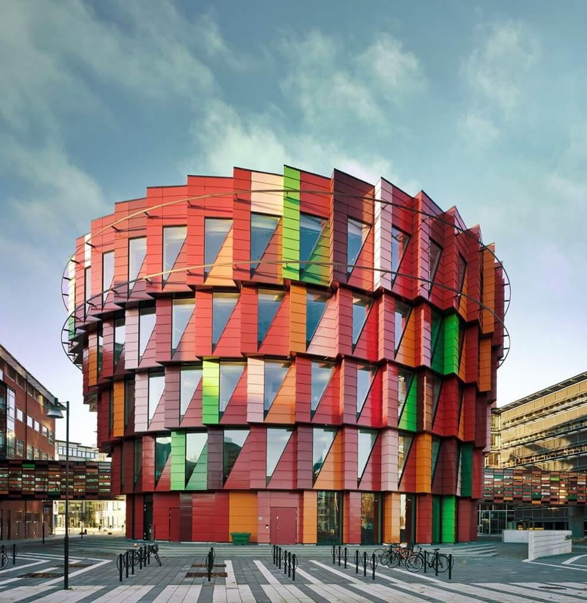

Постройка в стиле "Рококо"
- Чувственные наслаждения, изысканность, утонченность. Личный комфорт, на первом место. Основное внимание обращается на эротические и мифологические сюжеты в украшении комнат и зданий, детализированность декора.
- Стиль "Рококо" в архитектуре не такой масштабный, переключён на интересы человека с изысканным вкусом. Стиль рококо в архитектуре стал более легкий, игривый,чем другие стили.
- В рококо мы меньше обращаем внимание на функциональность, сочетание форм. Декорирование строится на асимметрии, вариативности членений плоскостей, перегруженности деталями. Архитектурный стиль рококо стремится уйти от прямых линий.
1440000 руб.

Работа в стиле "Постмодернизм"
- Вы сами можете внести свою фантазию, различные образные ассоциации, и выдумку в свою постройку.
- Мы накладываем на функционально-конструктивные основы здания говорящую и противоречивую декорацию из любого архитектурного стиля.
- Активно внедряем (возрождаем) декорирование стен, барельефы, росписи и пр., заимствованные зачастую из исторических архитектурных традиций. Во главе угла поставлена эстетика, для создания которой наши архитекторы не стеснятся заимствовать у исторических стилей, вплоть до принципов построения композиции.
17000000 руб.